Architectural Technology 2 - Waterfall Kindergarten (year 2, trimester 2)
Carried out over four coursework assignments, shown below.
Click on the images to make them bigger...


Carried out over four coursework assignments, shown below.
Click on the images to make them bigger...


In coursework 1 I was asked to research the Kindergarten Guntramsdorf Friespiel situated in Guntramsdorf, South Austria.
Guntramsdorf Friespiel was designed by G.O.Y.A (Group Of Young Architects).
In this high-quality open space, the kindergarten was embedded as an open, village structure which translates from the name ‘Guntramsdorf Friespiel’ to ’Free Game.’ The architecture is divided into several buildings, thus maintaining a child-friendly scale.
I was most fascinated by this kindergarten for the clear use of differing materials to show a clear distinction between the staff and administrative spaces to the children's learning zones but for it to still appear as one connected building. I decided to develop this further and take inspiration from this to my own designs.
For coursework 2 I had been asked to further my studies from coursework 1 and create my own kindergarten looking at the criteria for a kindergarten but also the space required for the children.
When first given the site I had to consider how the site itself would actually work and where I felt it would best fit my kindergarten.
The brief for coursework 2 asked for 2 group spaces (each suitable for 15 children), an internal toy store, children's toilets and cloakroom, managers office, administration office, kitchen, staff room, staff toilet, general storage and an external toy store.
Looking at the brief and the space required for the number of children within the building, this was my concept design and the design I carried through the remainder of the coursework.Floor plan and elevations created on Revit.
From research of the local area I found Tipperlinn Road to be a very close-nit village and has a lot of history behind it.
Many years ago Tipperlinn Road was largely known for its large supply of water to Edinburgh and so the name Tipperlinn Road came about from the Gaelic translation ‘the well of the waterfall’ and so I decided to name my kindergarten Waterfall.
As a way to in keep with the local community and understand their needs and wants I find this name as least intrusive and community welcoming.
The most important vision I had for my kindergarten was the flow of the building between the staff and children zones.
I decided to take inspiration from hospitals and the use of coloured lines to direct the public to their appropriate departments and so, I incorporated this into my kindergarten allowing children and parents to enter through the main reception and towards the reception desk where the children are to follow their age groups coloured line to the ‘house’ cloakroom and onto their rooms.
Floor plan created on Revit.
The flow of Waterfall kindergarten continues throughout the building and into the landscape.
I have three glass sliding door exits to different gardens and functions. From the 3-4 year old children’s room, the children are lead out to a senses garden where the children can grow, smell, touch and feel all different materials or objects. The central activity zone leads out to a vegetable/fruit patch where both the children attending the kindergarten and the local community could, perhaps, grow there own tomatoes and use this to make food. The final garden space leads out from the 4-5 year olds room to a further learning zone with a small auditorium space, water tables to play at and contouring landscapes.

 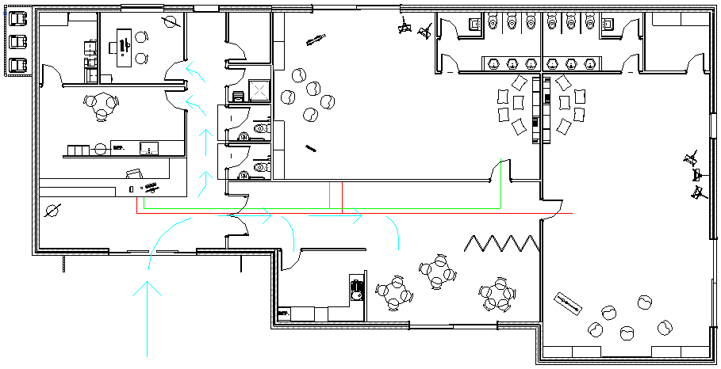
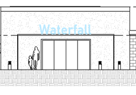
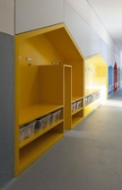
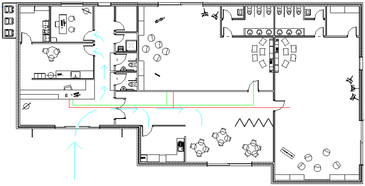
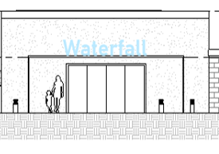
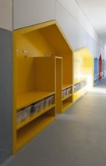
") 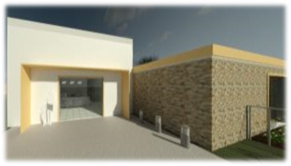
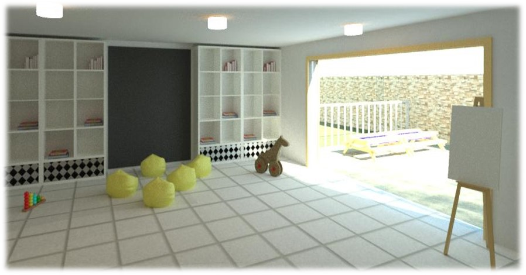
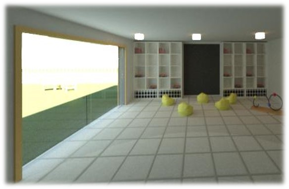
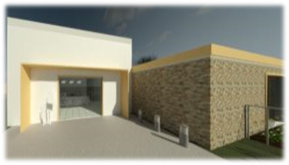
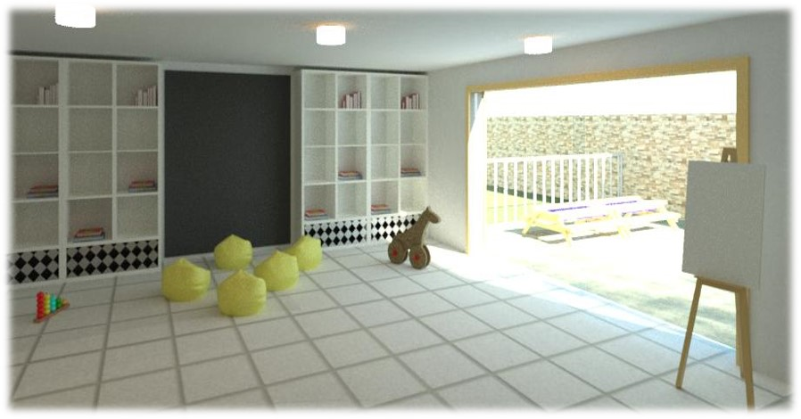
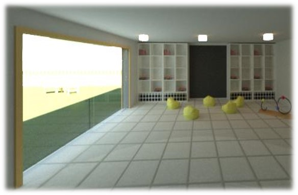
In coursework 3 I was asked to give 5 further details within my kindergarten. For my coursework I decided to focus on my ground floor, external wall to lean-to roof, internal to external wall detail, external wall to flat roof detail and lean-to roof to flat roof.
Details of the structural and architectural materials used are outlined through these sections.
Ground Floor Detail:
- 5mm White tile finish lino
- 60mm Concrete screed with Warm up In screed Under floor heating.
- Fixing strips to be placed after pouring 20mm of concrete
- Remaining 40mm concrete to be poured above.
- 60mm Thermafloor TF70 Insulation Board
- 150mm Concrete Floor Slab.
- DPM Minimum 150mm above ground.
- 12mm Sand
- 150mm Hardcore
Externall Wall to Lean-To Roof Detail:
- 5mm Roofing felt topped with small aggregate.
- Vapour Retarder
- 304 x 47 Timber Joist at 400 centres. Span 10.45m
- 147 x 47 Chords to allow for services and to be filled with 60mm Rockwool Cladding Roll.
- 50 x 25 Treated Timber
- 18mm White plywood fascia. Angled at base to provide drip
- 18mm plywood soffit with air vents at 45mm diameter, every 1200mm.
- 100 x 45mm Timber wall plate fixed with steel anchor bolts.
- 1200mm Twisted holding down strips fixed to internal block and up to every 3rd timber joist.
Internal Wall to External Wall Detail:
- Internal Timber stud partition wall is joined to brick/stone external wall with a masonry screw.
- Plasterboard will be attached to timber studs with Gyproc drywall screws at 400mm horizontal planes.
Gyproc sealant can be used for optimum acoustic insulation.
- Kingspan Thermawall TW55 insulation between timber studs.
- Gypsum Plasterboard to wrap at internal points leaving a flush appearance
- 12.5 mm Gypsum Plasterboard. FireLine plasterboard and water resistant plasterboard to be used in intermediate zones.
External Wall to Flat Roof Detail:
- 5mm Roofing felt topped with fine aggregate. Felt to run to edge of roof down to gutter.
- Vapour Retarder
- Declivity plate to allow for degree on flat roof. 4 degrees.
- 219 x 47 Timber easi-Joist at 400 centres. Span 7.7m
122 x 47 Chords to allow for services and to be filled with 60mm Rockwool Cladding roll
- 50 x 25 Treated Timber
- 18mm C24 Timber fascia board.
Angled at base to provide drip
- 18mm plywood soffit with air vents at 45mm diameter, every 1200mm.
- 100 x 45mm Timber wall plate fixed with steel anchor bolts.
- 1200mm Twisted holding down strips fixed to internal block and up to every 3rd timber joist
Hidden in place by plasterboard
Lean-To Roof to Flat Roof Detail:
- 5mm Roofing felt topped with small aggregate.
- Vapour Retarder
- 304 x 47 Timber Joist at 400 centres. Span 10.45m
147 x 47 Chords to allow for services and to be filled with 60mm Rockwool Cladding Roll.
- 50 x 25 Treated Timber
- 18mm White plywood fascia.
Angled at base to provide drip
- 18mm plywood soffit with air vents at 45mm diameter, every 1200mm.
- 100 x 45mm Timber wall plate fixed with steel anchor bolts.
- Led flashing. Running into block mortar.
- Render beading, dripping to led flashing
- 47 x 75mm Angle fillet
External Visual Appearance:
To in keep with surrounding buildings I decided to use Ashler stone as my external material in the kindergarten zones and a white render on the staff/entrance to incorporate the use of different materials but to also create a flow between staff and children zones. This was where my inspiration from Guntramsdorf Friespiel was taken.
Internal Visual Appearance:
Visual appearance of the building internally, 3-4 year old children's room looking out to the sense garden. Both rooms, 3-4 year olds and 4-5 year olds are similar in finish and style.
It was my decision to leave the rooms with a lot of design opportunities for the children and the community to design and create their own safe and fun spaces.
Visual appearance of the building internally, 4-5 year old children's room and the central activity zone with kitchen on the right with a half partition wall and looking out to the vegetable/fruit patch.
Renders created on Revit. For more details, view the PDF portfolio document here.
Overall I was and am very happy with my design.
If I had to critic myself I wish I had gave more consideration to my spans within my building as, although I found a supplier of easi-joist, the length of the joists required for my roof were coming to the maximum length.
One other thing I feel I would change would be to incorporate more fun elements within the children's room to allow the rooms to feel more like a kindergarten instead of leaving the entire building a blank canvas for the occupants.
The main task of coursework 4 was to produce a portfolio document to describe my work.
View portfolio document here.